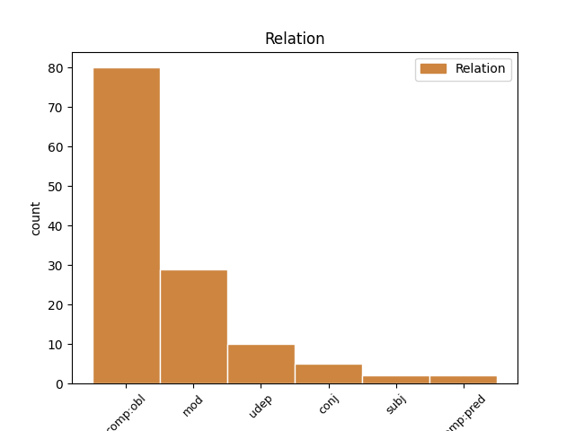
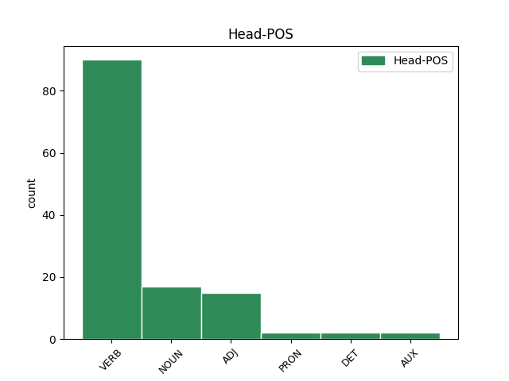
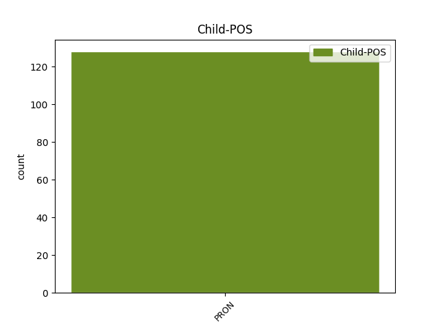

Distribution of features within this leaf



Agreement Rules sorted by frequency.
- When the dependent token is the oblique complements(comp:obl) of the head token, and the dependent token is PRON.
1 V _ _ _ _ 0 _ _ _
2 1. _ _ _ _ 0 _ _ _
3 tisočletju _ _ _ _ 0 _ _ _
4 so _ _ _ _ 0 _ _ _
5 jih on PRON Pp3mpa--y Case=Acc|Gender=Masc|Number=Plur|Person=3|PronType=Prs|Variant=Short 7 comp:obl _ Dep=7|Rel=Obj
6 Asirci _ _ _ _ 0 _ _ _
7 prisilili prisiliti VERB Vmep-pm Aspect=Perf|Gender=Masc|Number=Plur|VerbForm=Part 0 _ _ _
8 , _ _ _ _ 0 _ _ _
9 da _ _ _ _ 0 _ _ _
10 so _ _ _ _ 0 _ _ _
11 se _ _ _ _ 0 _ _ _
12 umaknili _ _ _ _ 0 _ _ _
13 v _ _ _ _ 0 _ _ _
14 iransko _ _ _ _ 0 _ _ _
15 gorovje _ _ _ _ 0 _ _ _
16 Zagros _ _ _ _ 0 _ _ _
17 . _ _ _ _ 0 _ _ _
1 Nemška _ _ _ _ 0 _ _ _
2 podjetja _ _ _ _ 0 _ _ _
3 bi _ _ _ _ 0 _ _ _
4 morala _ _ _ _ 0 _ _ _
5 zbrati _ _ _ _ 0 _ _ _
6 pet _ _ _ _ 0 _ _ _
7 milijard _ _ _ _ 0 _ _ _
8 mark _ _ _ _ 0 _ _ _
9 , _ _ _ _ 0 _ _ _
10 pa _ _ _ _ 0 _ _ _
11 so _ _ _ _ 0 _ _ _
12 jih on PRON Pp3fpa--y Case=Acc|Gender=Fem|Number=Plur|Person=3|PronType=Prs|Variant=Short 20 mod _ Dep=20|Rel=Atr
13 doslej _ _ _ _ 0 _ _ _
14 zmogla _ _ _ _ 0 _ _ _
15 le _ _ _ _ 0 _ _ _
16 nekaj _ _ _ _ 0 _ _ _
17 več _ _ _ _ 0 _ _ _
18 kot _ _ _ _ 0 _ _ _
19 tri _ _ _ _ 0 _ _ _
20 milijarde milijarda NOUN Ncfpa Case=Acc|Gender=Fem|Number=Plur 0 _ _ _
21 . _ _ _ _ 0 _ _ _
1 Najprej _ _ _ _ 0 _ _ _
2 ga _ _ _ _ 0 _ _ _
3 razumejo _ _ _ _ 0 _ _ _
4 nekateri _ _ _ _ 0 _ _ _
5 , _ _ _ _ 0 _ _ _
6 ki _ _ _ _ 0 _ _ _
7 so _ _ _ _ 0 _ _ _
8 kot _ _ _ _ 0 _ _ _
9 on on PRON Pp3msn Case=Nom|Gender=Masc|Number=Sing|Person=3|PronType=Prs 10 udep _ Dep=10|Rel=AdvM
10 rojeni rojen ADJ Appmpn Case=Nom|Degree=Pos|Gender=Masc|Number=Plur|VerbForm=Part 0 _ _ _
11 v _ _ _ _ 0 _ _ _
12 znamenju _ _ _ _ 0 _ _ _
13 strelca _ _ _ _ 0 _ _ _
14 . _ _ _ _ 0 _ _ _
1 Ženska _ _ _ _ 0 _ _ _
2 , _ _ _ _ 0 _ _ _
3 ki _ _ _ _ 0 _ _ _
4 hodi _ _ _ _ 0 _ _ _
5 za _ _ _ _ 0 _ _ _
6 vozičkom _ _ _ _ 0 _ _ _
7 , _ _ _ _ 0 _ _ _
8 ne _ _ _ _ 0 _ _ _
9 reagira _ _ _ _ 0 _ _ _
10 ; _ _ _ _ 0 _ _ _
11 najbrž _ _ _ _ 0 _ _ _
12 je _ _ _ _ 0 _ _ _
13 vse _ _ _ _ 0 _ _ _
14 to ta DET Pd-nsa Case=Acc|Gender=Neut|Number=Sing|PronType=Dem 0 _ _ _
15 in _ _ _ _ 0 _ _ _
16 še _ _ _ _ 0 _ _ _
17 kaj kaj PRON Pq-nsa Case=Acc|Gender=Neut|Number=Sing|PronType=Int 14 conj _ Dep=14|Rel=Coord
18 hujšega _ _ _ _ 0 _ _ _
19 videla _ _ _ _ 0 _ _ _
20 že _ _ _ _ 0 _ _ _
21 prevečkrat _ _ _ _ 0 _ _ _
22 . _ _ _ _ 0 _ _ _
1 Premerila _ _ _ _ 0 _ _ _
2 me _ _ _ _ 0 _ _ _
3 je _ _ _ _ 0 _ _ _
4 od _ _ _ _ 0 _ _ _
5 vrha _ _ _ _ 0 _ _ _
6 do _ _ _ _ 0 _ _ _
7 tal _ _ _ _ 0 _ _ _
8 in _ _ _ _ 0 _ _ _
9 se _ _ _ _ 0 _ _ _
10 tudi _ _ _ _ 0 _ _ _
11 ona on PRON Pp3fsn Case=Nom|Gender=Fem|Number=Sing|Person=3|PronType=Prs 12 subj _ Dep=12|Rel=Sb
12 nasmehnila nasmehniti VERB Vmep-sf Aspect=Perf|Gender=Fem|Number=Sing|VerbForm=Part 0 _ _ _
13 . _ _ _ _ 0 _ _ _
1 Ne _ _ _ _ 0 _ _ _
2 vem _ _ _ _ 0 _ _ _
3 , _ _ _ _ 0 _ _ _
4 kaj kaj PRON Pq-nsn Case=Nom|Gender=Neut|Number=Sing|PronType=Int 6 comp:pred _ Dep=6|Rel=Conj
5 je _ _ _ _ 0 _ _ _
6 bilo biti AUX Va-p-sn Gender=Neut|Number=Sing|VerbForm=Part 0 _ _ _
7 to _ _ _ _ 0 _ _ _
8 , _ _ _ _ 0 _ _ _
9 vendar _ _ _ _ 0 _ _ _
10 resnično _ _ _ _ 0 _ _ _
11 mislim _ _ _ _ 0 _ _ _
12 , _ _ _ _ 0 _ _ _
13 da _ _ _ _ 0 _ _ _
14 je _ _ _ _ 0 _ _ _
15 moralo _ _ _ _ 0 _ _ _
16 biti _ _ _ _ 0 _ _ _
17 povezano _ _ _ _ 0 _ _ _
18 s _ _ _ _ 0 _ _ _
19 tistim _ _ _ _ 0 _ _ _
20 , _ _ _ _ 0 _ _ _
21 karkoli _ _ _ _ 0 _ _ _
22 sta _ _ _ _ 0 _ _ _
23 že _ _ _ _ 0 _ _ _
24 delala _ _ _ _ 0 _ _ _
25 Jimmy _ _ _ _ 0 _ _ _
26 in _ _ _ _ 0 _ _ _
27 vaš _ _ _ _ 0 _ _ _
28 mož _ _ _ _ 0 _ _ _
29 . _ _ _ _ 0 _ _ _
Disagree Examples:
1 Cene cena NOUN Ncfpn Case=Nom|Gender=Fem|Number=Plur 0 _ _ _
2 zanje zame PRON Pp3npa--b Case=Acc|Gender=Neut|Number=Plur|Person=3|PronType=Prs|Variant=Bound 1 mod _ Dep=1|Rel=Atr
3 so _ _ _ _ 0 _ _ _
4 odvisne _ _ _ _ 0 _ _ _
5 predvsem _ _ _ _ 0 _ _ _
6 od _ _ _ _ 0 _ _ _
7 prevoženih _ _ _ _ 0 _ _ _
8 kilometrov _ _ _ _ 0 _ _ _
9 , _ _ _ _ 0 _ _ _
10 ohranjenosti _ _ _ _ 0 _ _ _
11 in _ _ _ _ 0 _ _ _
12 opreme _ _ _ _ 0 _ _ _
13 , _ _ _ _ 0 _ _ _
14 gibljejo _ _ _ _ 0 _ _ _
15 pa _ _ _ _ 0 _ _ _
16 se _ _ _ _ 0 _ _ _
17 od _ _ _ _ 0 _ _ _
18 treh _ _ _ _ 0 _ _ _
19 milijonov _ _ _ _ 0 _ _ _
20 tolarjev _ _ _ _ 0 _ _ _
21 navzgor _ _ _ _ 0 _ _ _
22 . _ _ _ _ 0 _ _ _
1 Lahko _ _ _ _ 0 _ _ _
2 je _ _ _ _ 0 _ _ _
3 spal _ _ _ _ 0 _ _ _
4 deset _ _ _ _ 0 _ _ _
5 , _ _ _ _ 0 _ _ _
6 dvanajst _ _ _ _ 0 _ _ _
7 ur _ _ _ _ 0 _ _ _
8 , _ _ _ _ 0 _ _ _
9 žena _ _ _ _ 0 _ _ _
10 mu on PRON Pp3msd--y Case=Dat|Gender=Masc|Number=Sing|Person=3|PronType=Prs|Variant=Short 13 comp:obl _ Dep=13|Rel=Obj
11 je _ _ _ _ 0 _ _ _
12 vedno _ _ _ _ 0 _ _ _
13 rekla reči VERB Vmep-sf Aspect=Perf|Gender=Fem|Number=Sing|VerbForm=Part 0 _ _ _
14 , _ _ _ _ 0 _ _ _
15 da _ _ _ _ 0 _ _ _
16 bo _ _ _ _ 0 _ _ _
17 prespal _ _ _ _ 0 _ _ _
18 življenje _ _ _ _ 0 _ _ _
19 … _ _ _ _ 0 _ _ _
1 Bila _ _ _ _ 0 _ _ _
2 je _ _ _ _ 0 _ _ _
3 pod _ _ _ _ 0 _ _ _
4 vtisom vtis NOUN Ncmsi Case=Ins|Gender=Masc|Number=Sing 0 _ _ _
5 nečesa nekaj PRON Pi-nsg Case=Gen|Gender=Neut|Number=Sing|PronType=Ind 4 mod _ Dep=4|Rel=Atr
6 novega _ _ _ _ 0 _ _ _
7 … _ _ _ _ 0 _ _ _
1 Harrisonov _ _ _ _ 0 _ _ _
2 prijatelj _ _ _ _ 0 _ _ _
3 Michael _ _ _ _ 0 _ _ _
4 Palin _ _ _ _ 0 _ _ _
5 iz _ _ _ _ 0 _ _ _
6 ekipe _ _ _ _ 0 _ _ _
7 Leteči _ _ _ _ 0 _ _ _
8 cirkus _ _ _ _ 0 _ _ _
9 Montyja _ _ _ _ 0 _ _ _
10 Pytona _ _ _ _ 0 _ _ _
11 mu _ _ _ _ 0 _ _ _
12 je _ _ _ _ 0 _ _ _
13 nekoč _ _ _ _ 0 _ _ _
14 namreč _ _ _ _ 0 _ _ _
15 potožil _ _ _ _ 0 _ _ _
16 , _ _ _ _ 0 _ _ _
17 da _ _ _ _ 0 _ _ _
18 mu on PRON Pp3msd--y Case=Dat|Gender=Masc|Number=Sing|Person=3|PronType=Prs|Variant=Short 20 comp:obl _ Dep=20|Rel=Obj
19 je _ _ _ _ 0 _ _ _
20 zmanjkalo zmanjkati VERB Vmep-sn Aspect=Perf|Gender=Neut|Number=Sing|VerbForm=Part 0 _ _ _
21 denarja _ _ _ _ 0 _ _ _
22 za _ _ _ _ 0 _ _ _
23 film _ _ _ _ 0 _ _ _
24 The _ _ _ _ 0 _ _ _
25 Life _ _ _ _ 0 _ _ _
26 of _ _ _ _ 0 _ _ _
27 Brian _ _ _ _ 0 _ _ _
28 . _ _ _ _ 0 _ _ _
1 Stopila _ _ _ _ 0 _ _ _
2 je _ _ _ _ 0 _ _ _
3 po _ _ _ _ 0 _ _ _
4 torbico _ _ _ _ 0 _ _ _
5 in _ _ _ _ 0 _ _ _
6 mu on PRON Pp3msd--y Case=Dat|Gender=Masc|Number=Sing|Person=3|PronType=Prs|Variant=Short 7 comp:obl _ Dep=7|Rel=Obj
7 pokazala pokazati VERB Vmep-sf Aspect=Perf|Gender=Fem|Number=Sing|VerbForm=Part 0 _ _ _
8 prerezana _ _ _ _ 0 _ _ _
9 ročaja _ _ _ _ 0 _ _ _
10 . _ _ _ _ 0 _ _ _